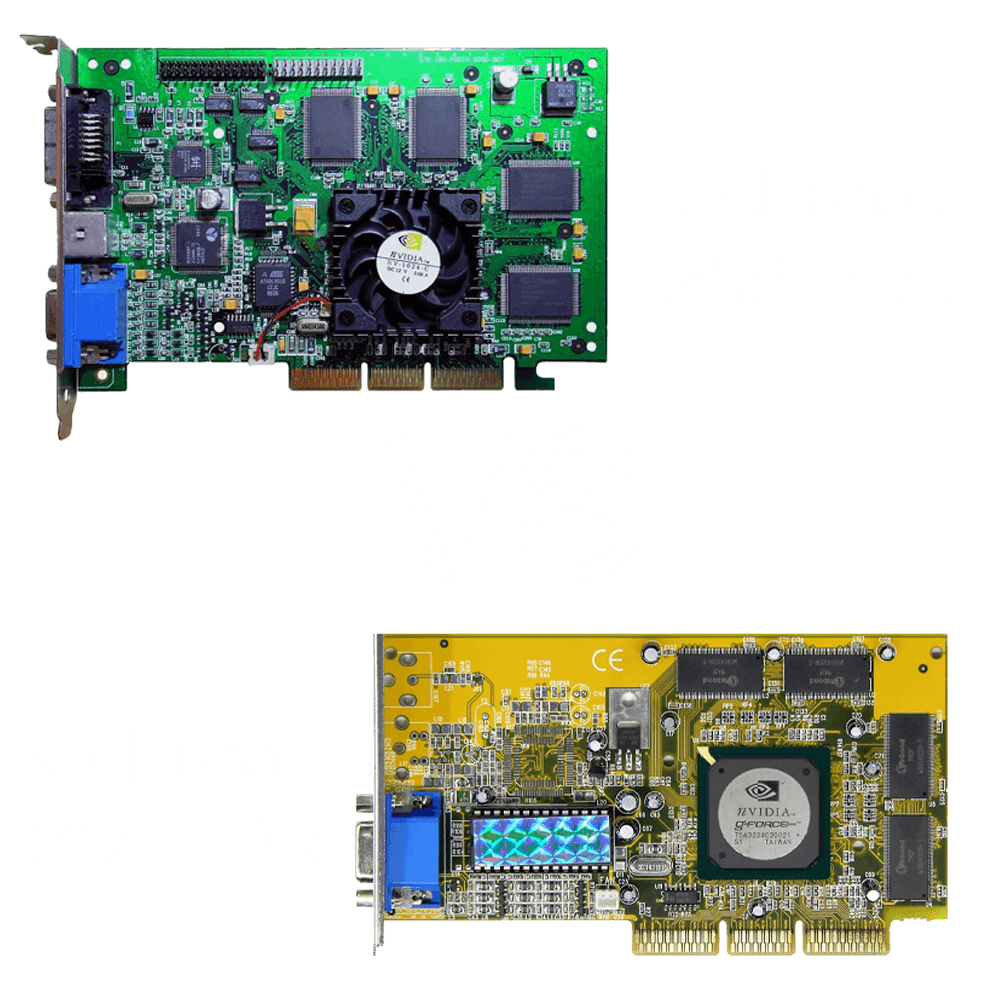
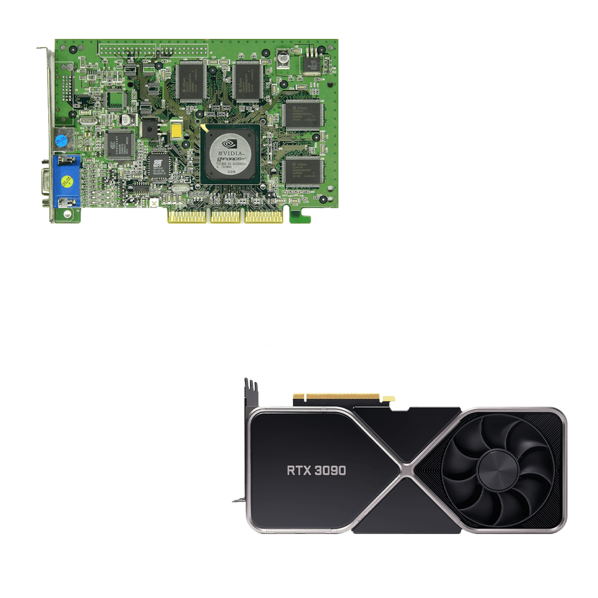

21 years later the GeForce 256 is reborn as LEGO
This year an artist from the London area has decided to propose on LEGO ideas, the official LEGO platform for the proposal of new production ideas by the community, a project in honor of the first GPU in the world, just the 256 we have talked about so far. The idea was very much appreciated by fans of old school technology and in June 2020 it already had more than 2300 positive comments (on the minimum necessary of 10k to be considered as a possible idea for production and official sale on a large scale).
Currently consulting the official page the proposal would seem to have expired (apparently before the theoretical time available).
Despite this, the same artist has also proposed two other projects dedicated to two other iconic products of the world of technology. 3DFX Voodoo and Creative Labs - Sound Blaster Pro 2 that are still in the race to reach the 10,000 positive evaluations needed.
If you're interested you can have a look at this artist's official Twitter account: @Bhaal_Spawn, or also her LEGO ideas page: @Bhaal_Spawn.
21 years later the GeForce 256 is reborn as LEGO
This year an artist from the London area has decided to propose on LEGO ideas, the official LEGO platform for the proposal of new production ideas by the community, a project in honor of the first GPU in the world, just the 256 we have talked about so far. The idea was very much appreciated by fans of old school technology and in June 2020 it already had more than 2300 positive comments (on the minimum necessary of 10k to be considered as a possible idea for production and official sale on a large scale).
Currently consulting the official page the proposal would seem to have expired (apparently before the theoretical time available).
Despite this, the same artist has also proposed two other projects dedicated to two other iconic products of the world of technology. 3DFX Voodoo and Creative Labs - Sound Blaster Pro 2 that are still in the race to reach the 10,000 positive evaluations needed.
If you're interested you can have a look at this artist's official Twitter account: @Bhaal_Spawn, or also her LEGO ideas page: @Bhaal_Spawn.
The 2 variants
The GeForce 256 was produced by NVIDIA in two distinct variants: SDR and DDR. These terms refer to the type of memory used. The first version is the original one, launched in October 1999 at a cost of about $250, and supported SDR (Single Data Rate) memory up to a maximum of 32MB. The second version was launched a few months later, in February 2000, and boasted a new generation of memory, DDR (Double Data Rate).
To understand well the difference between these two types of memory and the improvement occurred between the two generations we can read this explanation of the two technologies:" SDR makes a single data transfer for each full cycle of the clock. So, a clock rate of 100MHz translates to 100 million data transfers per second (100MT/s) with SDR. DDR makes a data transfer on both the rising edge and the falling edge of the clock. That's two data transfers in a single clock cycle. A clock rate of 100MHz then translates to 200 million data transfers per second (200MT/s) with DDR. "
- Definition by Joe Zbiciak (~ 20 years as processor architect)This change of technology has allowed an impressive increase in GPU power between the two versions in terms of bandwidth (i.e. the amount of data that can be transferred over a given period of time) from 1,144GB/s of the SDR version to 4.8GB/s of the DDR version.
This new, more powerful version of the NVIDIA GPU was launched on the market, as was imaginable with a price of about $300, which at the time was considered quite high enough for a graphics card, but on the other hand it is known that you pay for quality, and this GPU was certainly not lacking in quality.

The 2 variants
The GeForce 256 was produced by NVIDIA in two distinct variants: SDR and DDR. These terms refer to the type of memory used. The first version is the original one, launched in October 1999 at a cost of about $250, and supported SDR (Single Data Rate) memory up to a maximum of 32MB. The second version was launched a few months later, in February 2000, and boasted a new generation of memory, DDR (Double Data Rate).
To understand well the difference between these two types of memory and the improvement occurred between the two generations we can read this explanation of the two technologies:
SDR makes a single data transfer for each full cycle of the clock. So, a clock rate of 100MHz translates to 100 million data transfers per second (100MT/s) with SDR. DDR makes a data transfer on both the rising edge and the falling edge of the clock. That's two data transfers in a single clock cycle. A clock rate of 100MHz then translates to 200 million data transfers per second (200MT/s) with DDR.
This change of technology has allowed an impressive increase in GPU power between the two versions in terms of bandwidth (i.e. the amount of data that can be transferred over a given period of time2) from 1,144GB/s of the SDR version to 4.8GB/s of the DDR version.
This new, more powerful version of the NVIDIA GPU was launched on the market, as was imaginable with a price of about $300, which at the time was considered quite high enough for a graphics card, but on the other hand it is known that you pay for quality, and this GPU was certainly not lacking in quality.
The undisputed domain of the GeForce 256
The higher price of the GeForce 256 compared to the competition was not a bad choice for NVIDIA. In fact, the quality and performance of this product in its DDR version was so high that it clearly outperformed any other product at the time available on the video card market, so customers were happy to pay the increased price because they felt that that money was well spent.
In the picture opposite we can see the actual Benchmark score of the two versions of the GeForce 256 compared with those of the main competitors of the time such as the ATI Rage Fury MAXX or the S3 Savage 2000. The test as we see in the title was made in combination with an Intel Pentium III 700 CPU and with the first person shooter game Quake III Arena in 1024 x 768 resolution. From the graph we can see exactly what was said in the previous lines. We find the GeForce 256 SDR at a good level, in fourth place, with a performance score comparable to the average of the competition but still lower than some products like the two mentioned above.
In first place instead the DDR version of the 256 that, as mentioned above, shows its clear superiority by widely detaching the rest of the graphics cards and boasting a score even 41% higher than the second in the ranking.
The undisputed domain of the GeForce 256
The higher price of the GeForce 256 compared to the competition was not a bad choice for NVIDIA. In fact, the quality and performance of this product in its DDR version was so high that it clearly outperformed any other product at the time available on the video card market, so customers were happy to pay the increased price because they felt that that money was well spent.
In the picture opposite we can see the actual Benchmark score of the two versions of the GeForce 256 compared with those of the main competitors of the time such as the ATI Rage Fury MAXX or the S3 Savage 2000. The test as we see in the title was made in combination with an Intel Pentium III 700 CPU and with the first person shooter game Quake III Arena in 1024 x 768 resolution. From the graph we can see exactly what was said in the previous lines. We find the GeForce 256 SDR at a good level, in fourth place, with a performance score comparable to the average of the competition but still lower than some products like the two mentioned above.
In first place instead the DDR version of the 256 that, as mentioned above, shows its clear superiority by widely detaching the rest of the graphics cards and boasting a score even 41% higher than the second in the ranking.
Performance comparison between the GeForce 256 and the latest arrival: the RTX 3090
It is always said that technological evolution proceeds by tracing an exponential graph; never was this statement more true. To realize the truthfulness of this statement we can think of the famous "Moore's law", enunciated in 1965 by Gordon Moore, one of the founders of Intel, according to which the power of electronic circuits would roughly double every 18 months, generating an exponential graph.1 This phenomenon is observable in all areas of technology and that of graphic cards that we are dealing with is certainly no less.
To realize this almost frightening evolution we can compare the technical specifications of the mother of the GeForce series and the latest addition to the family, the RTX 3090.
- Release date:
GeForce 256: December 23, 1999
RTX 3090: September 1, 2020
- Transistors number:
GeForce 256: 17 million
RTX 3090: 28'300 million (+ 166'470% compared to 256)
- Memory Size:
GeForce 256: 32 MB
RTX 3090: 24 GB (+ 75'000%)
- Clock speed (processor speed, number of cycles executed every second):
GeForce 256: 120 MHz / No overclock
RTX 3090: 1395 MHz / 1695 MHz - overclock (+ 1'162.5% standard, + 1'412.5% overclock)
- Memory clock (memory speed) :
GeForce 256: 150 MHz
RTX 3090: 1219 MHz (~ + 812.5%)
- Process Size:
GeForce 256: 220 nm (nanometers = 1 billionth of a meter)
RTX 3090: 8 nm (approx. 96.35% reduction in size)
With this number we indicate the size of the transistors, basically the more the number is low, the better, because with small size transistors it is possible to reduce the physical space needed for the same number or increase the number for the same space, thus making possible a considerable increase in power reconciled with the size.Looking at the data, it is clear that the increase in computing power is impressive. In just under 20 years the number of transistors (the electronic components that underpin and make possible the execution of calculations and logical operations by computers) has increased from 17 million to 28'300 million, achieving an impressive + 166'470% compared to the GeForce 256 that has literally made the potential computing power of this GPU 166'470% higher than the original.
That of the number of transistors is the specification that has found the most important increase among all but if we look at the others were not less: the amount of memory available has achieved a + 75'000%, making it possible to store a much greater amount of data instantly accessible directly within the same hardware component, thus impacting positively on performance.
Finally, the remaining specifications such as processor frequency, memory speed and transistor size have also improved impressively.

Performance comparison between the GeForce 256 and the latest arrival: the RTX 3090
It is always said that technological evolution proceeds by tracing an exponential graph; never was this statement more true. To realize the truthfulness of this statement we can think of the famous "Moore's law", enunciated in 1965 by Gordon Moore, one of the founders of Intel, according to which the power of electronic circuits would roughly double every 18 months, generating an exponential graph.1 This phenomenon is observable in all areas of technology and that of graphic cards that we are dealing with is certainly no less.
To realize this almost frightening evolution we can compare the technical specifications of the mother of the GeForce series and the latest addition to the family, the RTX 3090.
Looking at the data, it is clear that the increase in computing power is impressive. In just under 20 years the number of transistors (the electronic components that underpin and make possible the execution of calculations and logical operations by computers) has increased from 17 million to 28'300 million, achieving an impressive + 166'470% compared to the GeForce 256 that has literally made the potential computing power of this GPU 166'470% higher than the original.
That of the number of transistors is the specification that has found the most important increase among all but if we look at the others were not less: the amount of memory available has achieved a + 75'000%, making it possible to store a much greater amount of data instantly accessible directly within the same hardware component, thus impacting positively on performance.
Finally, the remaining specifications such as processor frequency, memory speed and transistor size have also improved impressively.